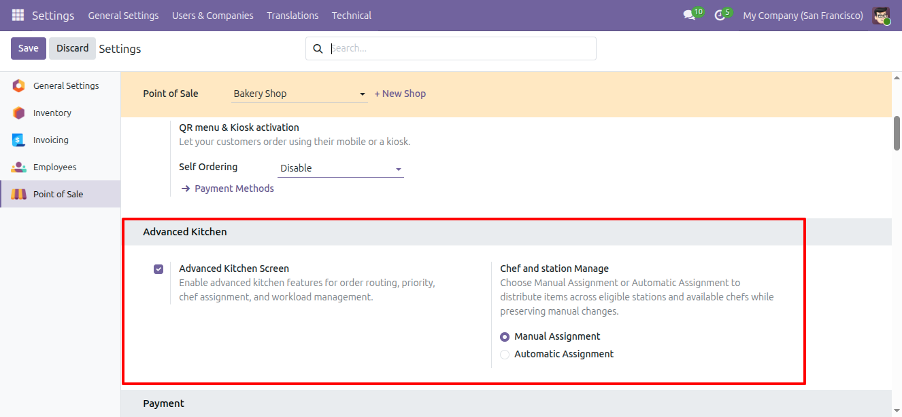

1. Kitchen Configuration
Open Point of Sale → Configuration and configure the kitchen settings available in the module. Set up the required kitchen stations, associate product categories, define chef records, and select the workload mode and station capacity.
Configuration Flow: Open POS Configuration → Configure Kitchen Stations → Assign Categories and Chefs → Set Workload Mode and Capacity → Save → Test in the Kitchen Display.

Kitchen configuration overview

Station and workload settings
Configuration Details
Use meaningful station capacities and preparation-time values when testing Time Wise workload. Confirm the preparation-time source and capacity unit used by the installed module.